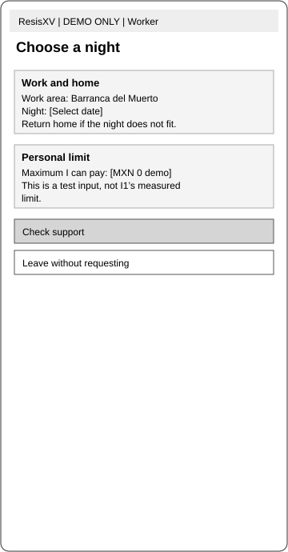
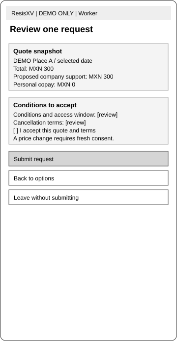

Recover Time
Explore whether one nearby night can create more time to recover between workdays. Actual rest gains still need to be measured.
ResisXV explores occasional, employer-supported stays near work for people whose long commutes leave little time to recover.
The goal is a feasible night of rest, with a clear personal cost and the freedom to return home.
Course concept · Pilot not operating · Module 6 work in progress
A shorter journey is useful only if the room, funding and household arrangements work for the person. Returning home remains a valid choice.
Explore whether one nearby night can create more time to recover between workdays. Actual rest gains still need to be measured.
Know the company contribution and personal amount before accepting a stay. An estimate is different from an approved commitment.
Consider a specific night while keeping the primary home. Support and household needs differ, so routine weekday use is not assumed.
Reports roughly two hours of outbound travel from Chimalhuacán to the Barranca del Muerto area and late returns.
Cannot independently fund lodging. A suitable room and an authorized contribution are prerequisites, not existing commitments.
Reports a long commute, but needs to return for household responsibilities. An exceptional night may fit better than recurring stays.
Her account challenges the idea that every long-distance commuter wants accommodation near work.
An authorized approver would define a shared fund, allocation rules and a review route, then account for the actual spending.
The interviewed buyer reference is not established as Sebastián’s employer. The proposed funding is not authorized.
Evidence basis: four supplied summary records, including one unresolved I4 identity/count. These are qualitative accounts, not population estimates. The complete record retains the research limits and earlier persona revisions.
The worker, employer and coordinator each have a role. A request becomes a confirmed stay only after both funding and provider checks pass.
Consider the next workday and responsibilities at home.
Decide whether a particular night is worth exploring.
Check eligibility, company support and personal cost.
Assess suitable accommodation and the return-home alternative.
Accept specific terms and await a clear decision.
Arrive, complete the stay and evaluate cost and rest.
The twelve wireframes distinguish pending from confirmed support, show the accepted personal cost and provide cancellation and exception paths.
These screens contain fictional demo prices. They do not reserve rooms, approve funding or collect payments.
Read the illustrated use cases >

Three releases sit within a twelve-week planning horizon. Staffing, funding and a calendar start remain unconfirmed.
| Release / target | Goal | Activities | Expected result |
|---|---|---|---|
| R1Week 6 | Test one supported stay | Verify authority and offers; test worker understanding; prepare funding, confirmation, support and reconciliation. | A controlled pilot only if readiness gates pass. Otherwise, remain in prototype mode. |
| R2Week 9 | Reduce observed friction | Improve relevant comparisons, decision clarity, issue reporting and charge-dispute recovery. | Changes driven by actual worker and operator findings, rather than every planned feature. |
| R3Week 12 | Decide whether to continue | Review use, voluntary outcomes, company spending, coordination effort and renewal. | Continue, revise, retain a simpler concierge service or stop. |
This is the currently documented proposal. The requested correction against the original plan remains open until that source is identified. No release is represented as delivered.
The completed documents are available here. “Prepared” describes document status; it does not mean that the service, pricing or outcomes are validated.
Personas, six use cases, MVC, features, metrics, costs and risks.
Open PDF >Markdown source >Moore statement, three core scenarios, messaging pillars and source trace.
Read positioning >Route decisions, eight business questions and 27 readiness items.
Read the checklist >Modules 3–6, 22 workflows, decisions, actual checks and remaining work.
Open PDF >Markdown source >The project is still being developed. Publishing the work makes it reviewable; it does not complete the remaining exercises or submit it to Canvas.
Prepared and available above, with assumptions and launch dependencies identified.
Complete the supplied workflow and retain its actual output.
Compare all required examples and record the reasoning behind the next revision.
Identify the earlier source, preserve the design/profiles and restore its goals, procedures and roadmap.
Live stays also depend on authorized funding, suitable offers, accepted liabilities and staffed support. No paid demand or operating outcome is reported.
Complete recorded context, including historical entries and unrecorded module placeholders. Source record: November 12, 2026.
No sections match. Try another word or clear the search.
Venture: ResisXV Student name(s): Andres Rojas Last updated: November 12 2026 Modules recorded: 3, 4, 5, 6 (Module 6 recorded to date; assignment tasks remain open) Tools on record: 22 documented workflows (3 from Module 3; 7 from Module 4; 7 from Module 5; 5 from Module 6); no operational lodging integration claimed
This is your running record of every tool you build this semester. You do not write in it directly. At the end of each weekly session in this Project, type:
record for module N in design document
Claude reads the session, drafts the entries for that module, asks you for anything it cannot find, and returns a new copy of this file. Download it and replace the old DESIGN_DOC.md in the Project's files. That is the whole loop.
Three rules Claude follows, and you should expect:
For any tool whose job is to judge or challenge something (a grill pass, a steelman challenge, a red-team pass, a consistency checker), Success criteria must include a demonstrated case proving the tool responds to what it is actually given. For a pass/fail tool, show it failing something. For a tool that generates critiques, show two different inputs producing materially different output.
One live scaffold. Claude updates it in place as files and folders are added. It should always show the project's current state, not a per-week log.
If your team works in Claude Projects rather than a file system, the named files in your Project knowledge stand in for folders. The logical structure matters, not whether it is a real directory.
ResisXV/
project-context/
DESIGN_DOC_ResisXV_Module6.md
research-and-mrd/
MRD_ResisXV.md
ResisXV_Module4_MRD_and_Personas.docx
ResisXV_Visual_MRD.pdf
Journey_ResisXV.md
Open_Hypotheses_ResisXV.md
user-stories/
User_Story_Board_ResisXV.xlsx
Happy_Path_ResisXV.md
affinity-and-content/
Affinity_Map_ResisXV.pdf
Affinity_Themes_ResisXV.md
Content_Model_ResisXV.html
design/
ResisXV_Wireframes_English.pdf
Screen_Flow_ResisXV.md
Mood_Board_ResisXV.pdf
Visual_Design_Brief_ResisXV.md
reusable-tools/
Journey_Template_ResisXV.md
Privacy_5C_Checklist_ResisXV.md
Screen_Card_Template_ResisXV.md
Usability_Test_Plan_ResisXV.md
Visual_Review_Checklist_ResisXV.md
Submission_Consistency_Check_ResisXV.py
submission/
ResisXV_Module4_Design_Document.pdf
ResisXV_Module4_English_Documents.zip
module5/
MVC_ResisXV.md
Scrum_Board_ResisXV.xlsx
Release_Plan_ResisXV.md
Journey_Walkthrough_ResisXV.html
Journey_Workflow_ResisXV.xlsx
ResisXV_Final_MRD_Module5.docx
User_Story_Board_ResisXV_Module5.xlsx
ResisXV_Final_Wireframes_Module5.pdf
Decision_Log_ResisXV_Module5.md
ResisXV_Module5_Design_Document.pdf
module6/
PRD_ResisXV.md
PRD_ResisXV.docx
PRD_ResisXV.pdf
Positioning_ResisXV.md
GTM_Checklist_ResisXV.md
DESIGN_DOC_ResisXV_Module6.md
ResisXV_Module6_Design_Document.pdf
Status: not recorded Session date: Summary (2 to 3 sentences on what the team did this week):
Status: not recorded Session date: Summary:
(tool entries added on record)
Status: recorded; research preparation and MRD drafting completed, primary fieldwork pending Session date: October 15 2026, America/Matamoros Summary: Developed ResisXV's worker persona, five testable hypotheses, two interview guides, an evidence scoreboard and a preliminary MRD. The student challenged the financial realism of hotels and supplied work and travel premises; subsequent research refined the claim from absence of accommodation to possible unaffordability. No interviews, willingness-to-pay results or employer agreements were fabricated.
Vision: Workers with long commutes should be able to protect recovery and reliable arrival without destabilizing their household. ResisXV explores occasional accommodation near work while preserving the worker's main home.
Primary persona: Jose Martinez, 45, production floor supervisor at PEFSA, living in Chimalhuacan with his wife and two children. The student reports an 8:30 a.m. to 5:30 p.m. schedule, approximately 48 hours per week, local surface transport plus Metro, and a three-to-four-hour daily commute. These remain project inputs rather than interview findings; exact workdays, breaks, income and routes require confirmation.
Core unmet-need themes: recovery and reliable arrival; affordable overnight alternatives while household expenses continue; and compatibility with family responsibilities. Safety and cleanliness are decision criteria to investigate, not established advantages of ResisXV.
Five hypotheses and status:
Evidence: Historical EOD data supports investigating long work journeys; ENVIPE adds regional perception evidence; official wage and hotel information motivate an affordability comparison. None establishes product demand. Complete source links and limitations appear in the supporting packet.
Additional research: First conduct two worker interviews, then a separate employer interview. Follow with a five-worker travel and rest diary, at least three dated lodging quotes, budget comparisons and, only if feasible, a limited voluntary paid pilot. This is a proposed sequence, not completed or scheduled fieldwork.
Top three interview questions:
Recommendation: Conditional Go for discovery and cost feasibility; No Go for accommodation commitments until affordability, worker demand, household fit, suitable supply and any employer approval are established. Proposed review date: October 29 2026, subject to arranging research; this is not a scheduled reminder or a promise that research will be complete.
The student's initial objection was that hotels were not economically realistic for the target worker. The student also supplied schedule and transport details and identified family acceptance as a concern. The revision treats affordability as a central constraint, uses current official wage context and checks actual accommodation supply; it replaces the unsupported absolute claim with a testable comparison. No additional student opinion or first-pass reasoning has been invented.
MRD instructions: Define the role, objective and inputs; identify the top job before proposing scope; separate findings from assumptions; require evidence for and against every hypothesis; report n and verdicts; compare alternatives on customer hiring criteria; and use explicit development gates. With no primary research, retain untested verdicts and label all scenarios.
Discovery instructions: Separate worker and buyer guides; number questions to hypotheses; use neutral, open questions about past behavior; introduce the product only after exploration; disclose recruitment; and record limitations. Do not generate participant identities, quotations, completed notes or validation results.
Iteration checks: Re-run the challenge on an absolute claim and a qualified claim and confirm materially different outputs. Check time and cost arithmetic, source dates, research denominators and hypothesis links. These are documented proposed revisions, not proof that the class skills were uploaded or modified in Claude.
Status: recorded; deliverables drafted and exported, research and operational limits disclosed Session date: October 22 2026, America/Matamoros Summary: Converted supplied interview summaries into an updated persona-led MRD, twenty primary stories plus three internal proposals, an affinity map, an eleven-type content model and eleven static wireframes. The student supplied the moodboard, corrected the individual versus company-wide funding scope and the I4 nightly budget, and requested all submission documents in English. This session documents completed drafting and reusable workflows; it does not claim funded accommodation, completed stays, usability findings or an externally submitted assignment.
Recording scope: This entry was prepared in ChatGPT Work from the ongoing project. The original course template's references to Claude are retained as template instructions, not a claim that the work ran in Claude. The earlier Module 3 entry was restored verbatim from DESIGN_DOC_ResisXV_Module3.md and remains a dated snapshot; its current-state assumptions are superseded below.
| Item | File or record | Current status |
|---|---|---|
| 1 Visual MRD | ResisXV_Visual_MRD.pdf; MRD_Visual_ResisXV.html; ResisXV_Module4_MRD_and_Personas.docx | Drafted in English; persona evidence and open hypotheses disclosed. |
| 2 User Story Board | User_Story_Board_ResisXV.xlsx; .html; .md | 20 primary stories and 3 internal proposals; prototype scope remains proposed. |
| 3 Moodboard | Student Mood Board.pdf; Visual_Design_Brief_ResisXV.md | Original received and reviewed; type/caption refinements remain proposed. |
| 3 Affinity map | Affinity_Map_ResisXV.pdf; Affinity_Themes_ResisXV.md | 40 observations, 5 themes and one orphan; legacy column labels need alignment. |
| 3 Content model | Content_Model_ResisXV.html; .md | 11 content types with sources, owners, relationships and formulas; full internal capture review pending. |
| 4 Wireframes | ResisXV_Wireframes_English.pdf; Wireframes_ResisXV.html; Screen_Flow_ResisXV.md | 11 static screens, including no availability, denial and cancellation; usability not tested. |
| 5 Design document | DESIGN_DOC_ResisXV_Module4.md; ResisXV_Module4_Design_Document.pdf | Recorded from this session; PDF exported for the student to upload to Canvas. |
The machine-check report has a passing eight-rule baseline and a deliberate failing control. The following broader review remains separate; it is not made true by the baseline result.
| Check | Result | Evidence or open issue |
|---|---|---|
| Primary research persona | Consistent by I1 reference; labels not word-for-word identical | MRD, story board and brief use Sebastian; screen cards cite I1 but do not always repeat the name. |
| Journey columns identical in every artifact | Open | Later English artifacts use the canonical six-stage set; the affinity map retains earlier provisional labels. Journey_ResisXV.md records the crosswalk, but the map was not fully regenerated. |
| Every prototype P0 on a screen and every cited story exists | Pass for structured IDs | Submission_Consistency_ResisXV.json baseline; negative control catches missing S13. |
| Screen types exist and required fields all have capture surfaces | Partial | The screen cards map displayed types/fields. Administrative required-field capture and authorization are not fully checked. |
| Affinity theme coverage | Present in the board | T1-T5 are cited. This checks linkage, not the validity or approval of the clustering. |
| Outcome computable from defined fields | Structurally mapped | Feedback rest/experience, stay actual copay and request accepted cap are defined. No completed-stay data exists; missing inputs mean no result. |
| Mood direction and trigger emotions | Proposed, not user-tested | Calm/trustworthy/dignified are intended responses to fatigue and uncertainty, not claimed participant feelings on app use. |
| MVP sentence and screen strip | Partially expanded with changes disclosed | The seven story steps are implemented through additional pending, condition and exception states. Some v1/Later details were pulled into the screen drafts; the board scope was not silently overwritten. |
The student selected I1 as primary, challenged the I4 MXN 500 figure, corrected I2 funding to a company-wide pool, raised excluded-worker consequences, supplied the moodboard and required English documents. Early screen groups were reviewed in chat; later material was delivered for review. Alternative rationales labelled as recorded now are this recording's design explanation, not invented claims about a past student debate.
The central change is that travel burden, household fit and ability to pay are treated separately. Angélica's emergency-only situation contrasts with Sebastian's suggested weekday use; the prototype cannot assume that a shared company fund covers everyone. The user contribution is documented without claiming the student independently originated every AI-generated metric, field or screen.
Journey_Template_ResisXV.md, Privacy_5C_Checklist_ResisXV.md, Happy_Path_ResisXV.md, Screen_Card_Template_ResisXV.md, Usability_Test_Plan_ResisXV.md, Visual_Review_Checklist_ResisXV.md and Submission_Consistency_Check_ResisXV.py are included in the English handoff package. The checker has a recorded positive and negative input demonstration. These are files/workflows; no new installed skill or live third-party connection is claimed.
Status: recorded; Module 5 artifacts prepared for student review and submission; research and live-use gates remain open Session date: October 29 2026, America/Matamoros Summary: Updated ResisXV from the Module 4 drafts into a complete story board, MVC one-pager, twelve-week delivery plan, actor-based customer workflow, final MRD and key wireframes. The student supplied the course skills and class examples, requested accurate matching of their structures, and directed motel/hostel comparison and English deliverables. Seven workflows are recorded below; this is a record of completed drafting and checks, not a claim that the product, research studies or funded accommodation operated.
| Item | Main files | Status |
|---|---|---|
| 1 MVC 1 pager | ResisXV_MVC_One_Pager.pdf | One-page draft, story linked; architecture choices proposed. |
| 2 Final MRD and User Story Board | ResisXV_Final_MRD_Module5.docx; User_Story_Board_ResisXV_Module5.xlsx | Includes 20 worker, 5 purchaser and 3 internal stories; evidence limits and open gates disclosed. |
| 3 Final Design | ResisXV_Final_Wireframes_Module5.pdf | 12 key screens plus IA page; editable SVG/HTML and test plan included. |
| 4 Customer Journey Workflow | Journey_Walkthrough_ResisXV.html; Journey_Workflow_ResisXV.xlsx | Branching workflow and detailed table prepared; browser print layout still unverified. |
| Required planning exercise | ResisXV_12_Week_Scrum_Board.pdf; Scrum_Board_ResisXV.xlsx | 58 cards, six sprints, three release milestones; staffing and calendar unconfirmed. |
| 5 Running design record | DESIGN_DOC_ResisXV_Module5.md; ResisXV_Module5_Design_Document.pdf | Current module recorded; earlier modules preserved. Student uploads PDF and replaces context Markdown. |
The Scrum linter rejected a nonexistent story, a premature release story and a missing dependency. The journey checker rejected a nonexistent Controller and an invalid target. The wireframe checker rejected an unknown story and a missing or broken exit. The final story checks confirmed four-part wording, 28 IDs and at least two worker stories per canonical stage. These are structural checks, not evidence of research authenticity, usability, capacity or live feasibility.
One rendering limitation remains explicit: the customer workflow’s full browser appearance and one-page print layout were not verified because Chromium was unavailable. A minimal-DOM Node VM exercised script execution and routing after an escaping defect was corrected. This is narrower than a real-browser test. The final Word MRD and wireframe PDF were rendered and visually inspected, and spreadsheet previews were reviewed.
Cross-module limitations remain: the older affinity map still uses provisional stage labels, complete operations-field capture has not been reviewed, and the full operations console is not part of the twelve key screens. Later story and journey releases remain proposed. These open items are not erased by successful ID checks.
The student supplied the corrected course skills and two visual examples, asked that the documents match them accurately, requested motel/hostel alternatives, and authorized each next deliverable. Earlier student corrections to funding scope, I4’s budget and excluded-worker effects remained active. The user also clarified that the workflow submission should include HTML and Excel; the response followed the course skill’s deliverable list.
The design keeps purchaser and worker roles separate. Essential support setup, approval, reconciliation and operations move into R1 prerequisites even though broader purchaser/platform features are later. This is an explicit proposed scope change, not a quiet reclassification of evidence. Native apps and automated provider/payment integrations are deferred because no current core story requires them. These rationales are recorded from the drafting process; they do not invent an earlier student debate.
Scrum_Card_Linter_ResisXV.py, Journey_Consistency_Check_ResisXV.py, Wireframe_Consistency_Check_ResisXV_Module5.py and Wireframe_Review_Template_ResisXV_Module5.md are included in the handoff. The checker packages retain their input data and recorded negative-control results so their actual scope can be reviewed. The decision log records dated changes without replacing the MRD with a transcript.
Status: recorded to date; assignment work remains open. Session date: November 12, 2026. Summary: I prepared the ResisXV PRD, positioning statement and GTM checklist using the Module 5 research and design work. I asked for the PRD to follow the supplied InstaVacay example, reuse the generated persona image and stay close to my original goals, procedures and roadmap. The completed drafting is recorded below. The Innovation Framework exercise, the required three-example PRD scorecard and second iteration, and the requested original-plan correction are not recorded as complete.
The current requirements describe an occasional employer-supported stay near work, with an accepted personal cost, confirmed accommodation and a review of actual rest and expense. Sebastián remains the primary research persona; the authorized employer buyer is a separate role. I2 is not established as Sebastián’s employer, and the shared funding range is not a per-worker allowance.
The PRD carries forward a proposed twelve-week plan with R1 at Week 6, R2 at Week 9 and R3 at Week 12. These are the currently documented milestones, not proof that they match the earlier plan I subsequently asked to restore. The two later Word uploads contain identical extracted paragraph/table text. The original reference I called “PIOGI” has not been identified, so its goals, protocols and roadmap cannot be reconstructed reliably.
| Deliverable | Recorded status | Remaining action |
|---|---|---|
| Positioning statement | Prepared in Positioning_ResisXV.md. | Review proposed wording and test the benefit. |
| GTM checklist | Prepared in GTM_Checklist_ResisXV.md. | Resolve open launch commitments; checklist completion is not launch approval. |
| PRD | 25-page PDF, Word and Markdown prepared. | Align with the original plan once identified; complete required comparative evaluation and second iteration. |
| Marketing website | Student supplied PRD_Github.html as context, stating a marketing page is published; plans to submit through GitHub. | Use the functioning site and repository links. This record does not independently audit the deployed page or treat the HTML note as the marketing implementation. |
| Innovation Framework exercise | Not recorded as completed. | Complete the supplied exercise and retain its output. |
| Three-example PRD evaluation | Not recorded as completed. | Review all three required examples, produce a scorecard and use it for the next PRD iteration. |
| Module 6 design record | Prepared by this update. | Student reviews, submits the PDF and replaces the old context Markdown. |
GitHub submission references supplied in the project context:
These identify the submission destinations; this update does not certify current page content or change the repository.
I supplied the InstaVacay example and asked for a similar PRD structure and narrative, with the previously generated persona image. I then requested the positioning document and GTM checklist. I specified that the marketing page would be submitted through GitHub and clarified that the uploaded HTML and GTM file were context, not an instruction to publish or edit them.
I later asked to preserve the design and persona development while restoring the original goals, protocols and roadmap. That correction remains active. The exact earlier plan must be identified before the narrative is rewritten. Subsequent portrait generation produced separate illustrative images; no replacement of PRD persona images is recorded as completed or authorized by those image requests alone.
The PRD drafting pass reviewed all 25 rendered pages and checked IDs and arithmetic. Positioning checks confirmed the section structure and identical Moore statement. GTM checks counted the eight questions, 27 launch items and ten claims. The two later Word uploads were compared at extracted paragraph/table level and had no text differences.
These checks establish document consistency only. They do not establish customer demand, funding, suitable rooms, operating capacity, causal rest improvements or successful public deployment. Internal critique against the supplied example is not the separate assignment deliverable requiring three examples, a scorecard and a second iteration.
The PRD source, positioning source trace and GTM claims/checklist tables can be reused for the next revision. They remain source-linked documents rather than autonomous agents. Modules 1–2 and 7–9 remain unrecorded; the record does not fill them from inference.
Status: not recorded Session date: Summary:
(tool entries added on record)
Status: not recorded Session date: Summary:
(tool entries added on record)
Status: not recorded Session date: Summary:
(tool entries added on record)
| Date | Command | What changed |
|---|---|---|
| October 15 2026 | Record for module 3 in design document | Restored the existing three-workflow Module 3 record from the prior project copy; historical text preserved with dated revision additions. |
| October 22 2026 | Fill out the design document for module 4 | Recorded seven Module 4 workflows, the student corrections, English deliverables, actual consistency-check controls, open limits and handoff files. Modules 1-2 and 5-9 remain unrecorded. |
| October 29 2026 | Fill out the design document for module 5 | Recorded seven Module 5 workflows, student direction, sourced MRD update, 28-story board, delivery/workflow/design files, actual check results and open gates. Modules 3-4 preserved; 1-2 and 6-9 remain unrecorded. |
| November 12 2026 | Record Module 6 design work to date | Added PRD, positioning, GTM, version comparison and cumulative-record workflows. Preserved Modules 3–5. Innovation exercise, three-example evaluation/second iteration and original-plan correction remain open. |
(complete after Module 9: a 250-word index of every tool built, which ones you would keep using on a new idea, and which ones were specific to this venture and would not transfer)